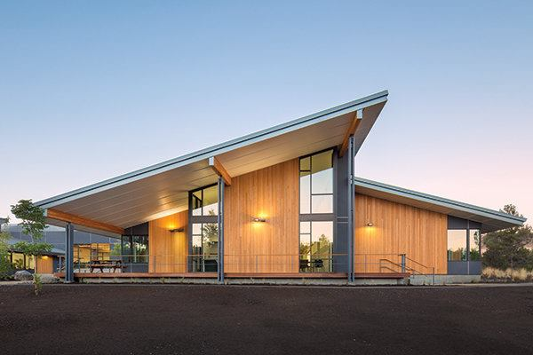
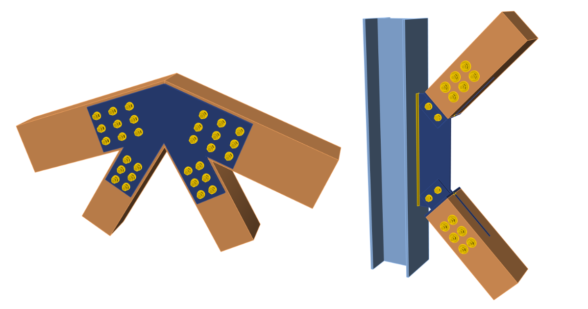

This project demonstrates the use SQL in investigating and determining
trends and insights which aid the understanding of vancouver crime situation.
The data set contains cases of crimes reported yearly in Vancouver between 2003 and 2017.
The SQL codes can be seen here

This project demonstrates the use of regression models to predict the embedment strength
of timber connections. It uses two independent statistical methods to identify errors in existing
calculation models and proposes new and efficient models for determining the strength of timber connections.
....(In view)
This project demonstrates the use of inferential statistics to determine statistical
significance and insignicance between three products of thesame kind. The results help to distinguish
the best performing product from the others and informs on the best business strategy to apply
...(In view)
Hi, I am Stanley - a researcher on timber structures with sound knowledge of statistical analysis. I spent the past
few years conducting research and "making sense" out of data. I have worked with different individuals at different times, a situation
that has aforded me excellent practical insight of what it means to work in multi-cultural environments.
The whole data analytics and inter-cultural experience exposed me to the enormous possibilities for change,
and developement hidden in data, and led me to the conclusion that the solutions that a man seeks for, are
probably hidden in his own database. This caused a complete revolution in the way I viewed data and birthed an
undying love and passion for data and analytics in me. I have since decided, not just to base my actions on
concrete data, but also to assist others to do thesame.
As a trained Engineer, who has both learned and taught others how to break down projects into tiny pieces
which when analysed and put together gives rise to beautiful structures, I have chosen to apply my hard and
soft skills to continue to make the difference in the world of analytics. I am aware that some of the projects
posted above, contain certain technical details. The goal of the projects however, was not just to discuss data
analytics process with you, but also to casually expose you to some commonly - used terms in structural timber engineering.
I am hopeful that you would enjoy the studies herein discussed, as well as have an understanding of my analytical conclusions.
Remember, the solutions that you seek for, are probably hidden in your database, let's find them together.